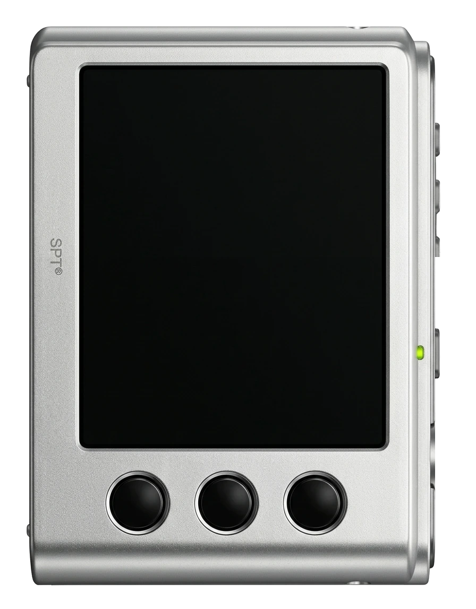

LOADING

Q1 / 5
快分享你的 SPOTIME 給朋友們吧！
這張是示範版本。換成你的自拍再發，朋友一眼就能認得出是你
加入 LINE 好友第一時間收到開賣消息！
長按圖片 →「儲存到照片」，再到 IG 發限時動態，記得標註 @spotimelab
從相簿挑一張這樣的照片，效果最好：
自拍或最多四個人的合照都可以。照片只在你的手機裡處理，不會上傳到任何地方。
正在看這張照片⋯
貼片位置不對的話，用手指拖到想要的地方。